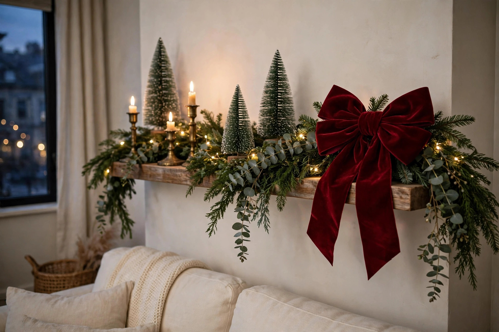

Christmas Decor
Christmas Mantle 2026 — 12 Ideas for a Small Apartment
Intro
The mantel is the one spot in a small flat that can carry the whole of Christmas. It does not need a fireplace — a shelf, a picture ledge or even the top of a low bookcase works just as well. In 2026 the trend is softer and calmer than the heavy red-and-gold mantels of a few years ago: natural garlands, oversized bows, warm candlelight and one strong focal point instead of a crowded shelf.
This guide has 12 Christmas mantle ideas for 2026, all sized for a small apartment and a small budget. Each idea lists what it costs. Most of these use things you already own, plus one or two new pieces. Start with the garland, add the lights, and finish with a bow — the mantel will look finished in one afternoon.

1. An asymmetric garland, heavy on one side — $15–$25
In 2026 the garland does not run straight across the mantel. It sweeps from one end, thick and full, and thins out as it crosses to the other side. That asymmetry makes a small mantel look styled, not stuffed. Buy one faux pine garland about 180 cm long, or gather two shorter ones, and bunch the full end on the left with the thin tail trailing right. Add a few pinecones and one string of warm fairy lights tucked inside. A garland costs about $15 and the lights about $5. Keep the other end clear for a candle or a small framed print.
2. One oversized velvet bow as the centrepiece — $5–$10
The biggest mantel trend of 2026 is the oversized bow. A wide velvet ribbon, about 10 cm across, tied into a big loose bow and hung in the centre of the mantel replaces a whole row of small decorations. Choose deep green, burgundy or cream velvet — one colour, no pattern. A metre of velvet ribbon costs about $6. Tie the bow loosely so the loops stay soft, and let the tails hang down about 30 cm. It looks expensive, costs almost nothing and takes five minutes.
3. Dried orange slices on a simple pine garland — $3–$8
Dried orange slices are the natural decoration of 2026, and they cost almost nothing to make. Slice two oranges thinly, dry them in a low oven for two hours, and thread them onto string with cinnamon sticks. Hang the string along the front of the garland so the slices catch the light. The oranges cost about $3 and the cinnamon about $2. They smell faintly of Christmas for weeks, look warm against green pine, and cost less than one shop-bought ornament.
4. Battery candles in three heights — $10–$18
Real candles on a mantel are a risk in a small flat, especially above a fireplace. Battery candles with a flickering flame give the same warm glow with no danger. Group three of them in different heights — about 10, 15 and 20 cm — at one end of the mantel, inside glass hurricane holders if you have them. A set of three battery candles costs about $12. Put them on a timer so they switch on at dusk. The glow makes the whole mantel look warm, even in daylight.
5. A row of bottle-brush trees in one colour — $8–$15
Bottle-brush trees are back in 2026, but this year they come in one colour only — all cream, all green or all white — instead of a mixed rainbow. Line up five or seven of them along the mantel in different heights, from 10 to 25 cm, like a tiny forest. A pack of mixed-size bottle-brush trees costs about $10. Keep them in one colour so the row looks calm and intentional. They pack flat in January, so they store in a shoebox until next year.
6. A eucalyptus garland instead of pine — $10–$18
If pine feels too traditional, eucalyptus is the 2026 alternative. Its soft grey-green leaves suit a small modern flat better than dark pine, and it smells fresh for weeks. Drape one faux eucalyptus garland across the mantel and add a few white fairy lights. A 180 cm garland costs about $12. It works best with cream candles and a light-coloured bow, and it is light enough to hang from two small adhesive hooks with no damage to the wall.
7. Stockings on adhesive hooks, no drilling — $5–$12
Stockings belong on the mantel, but a rented flat cannot take screws. Small adhesive hooks, the kind that hold about 1 kg each, stick to the mantel edge and peel off cleanly in January. Hang one stocking per person, in a plain knit or linen, spaced evenly along the front. Adhesive hooks cost about $3 and simple stockings about $3 each. Keep the stockings small — oversized ones crowd a small mantel. Fill them with one orange and a few sweets on Christmas Eve.
8. A mirror behind the garland to double the light — $0–$15
A mirror behind the mantel is the oldest small-room trick, and in 2026 it is back. Lean a mirror you already own against the wall above the mantel, behind the garland, and the fairy lights reflect in it, doubling the glow. If you do not own a spare mirror, a small round one about 40 cm across costs about $15 in a discount store. The mirror also makes the mantel look deeper than it is, which is exactly what a small flat needs.
9. Paper stars in cream and gold — $4–$8
Folded paper stars are the handmade trend of 2026. They are light, cheap and look far better than their cost. Buy a pack of ready-folded paper stars in cream and gold, or fold your own from brown parcel paper, and hang three of them from the mantel at different heights on thin thread. A pack of six stars costs about $5. They catch the light and move gently in the draught, which makes the mantel feel alive. Store them flat in a book in January.
10. A monochrome mantel in cream and green — $10–$20
The calmest 2026 mantel uses only two colours: cream and green. A green garland, cream candles, cream stockings and a cream bow — nothing red, nothing gold. The restraint makes a small mantel look expensive, because the eye is not pulled in ten directions. If you already own a green garland and cream candles, this costs nothing. If you need the bow and one set of candles, budget about $15. It suits a flat that is already pale and calm.
11. A small wreath hung in the centre — $8–$15
Instead of a bow, hang a small wreath — about 30 cm across — in the centre of the mantel, from a ribbon hooked over the top. A simple wreath of pine and pinecones, or eucalyptus, frames the middle of the mantel and gives it a clear focal point. A small wreath costs about $10. Hang it low, so its bottom edge just touches the garland, and keep the sides of the mantel simple — two candles on one side, one small tree on the other.
12. Keep the mantel clear by New Year — $0
The best 2026 mantel habit is to take it down early. Pack the garland, the bow and the stars away on 2 January, before the flat starts to feel cluttered again. The mantel goes back to holding one candle and one framed print, and the flat feels fresh for the new year. A mantel that is decorated for three weeks and clear for the other forty-nine looks special every time it is done. Plan the clear-up when you put it up, and it takes ten minutes.
Conclusion
A 2026 Christmas mantel in a small flat needs three things: one garland, one strong focal point and warm light. The asymmetric garland, the oversized bow and the battery candles do most of the work, and everything else — the orange slices, the bottle-brush trees, the paper stars — is decoration, not necessity. Pick your focal point first, keep the colours to two or three, and the mantel will look calm, current and finished.
Budget recap
- Faux pine garland + fairy lights: ~$20 - Oversized velvet bow: ~$6 - Battery candles, set of three: ~$12
Total for a 2026 mantel: ~$25–$40 — start with the garland, then the bow.
Pinterest pin titles
- Christmas Mantle 2026 — 12 Ideas for a Small Apartment
- 12 Christmas Mantle Ideas for 2026 (Small Flat, Big Style)
- The 2026 Mantle: 12 Trends That Fit a Tiny Living Room